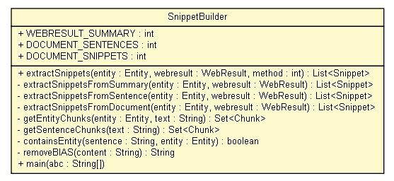

tud.iir.extraction.snippet
Class SnippetBuilder

java.lang.Object
 tud.iir.extraction.snippet.SnippetBuilder
tud.iir.extraction.snippet.SnippetBuilder
public class SnippetBuilder
- extends java.lang.Object
| Methods inherited from class java.lang.Object |
clone, equals, finalize, getClass, hashCode, notify, notifyAll, toString, wait, wait, wait |
WEBRESULT_SUMMARY
public static final int WEBRESULT_SUMMARY
- See Also:
- Constant Field Values
DOCUMENT_SENTENCES
public static final int DOCUMENT_SENTENCES
- See Also:
- Constant Field Values
DOCUMENT_SNIPPETS
public static final int DOCUMENT_SNIPPETS
- See Also:
- Constant Field Values
SnippetBuilder
public SnippetBuilder()
extractSnippets
public java.util.List<Snippet> extractSnippets(Entity entity,
WebResult webresult,
int method)
extractSnippetsFromSummary
private java.util.List<Snippet> extractSnippetsFromSummary(Entity entity,
WebResult webresult)
extractSnippetsFromSentence
private java.util.List<Snippet> extractSnippetsFromSentence(Entity entity,
WebResult webresult)
extractSnippetsFromDocument
private java.util.List<Snippet> extractSnippetsFromDocument(Entity entity,
WebResult webresult)
getEntityChunks
private java.util.Set<com.aliasi.chunk.Chunk> getEntityChunks(Entity entity,
java.lang.String text)
getSentenceChunks
private java.util.Set<com.aliasi.chunk.Chunk> getSentenceChunks(java.lang.String text)
containsEntity
private boolean containsEntity(java.lang.String sentence,
Entity entity)
removeBIAS
private static java.lang.String removeBIAS(java.lang.String content)
main
public static void main(java.lang.String[] abc)